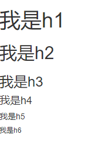
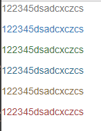
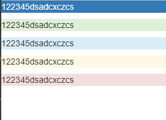
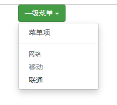
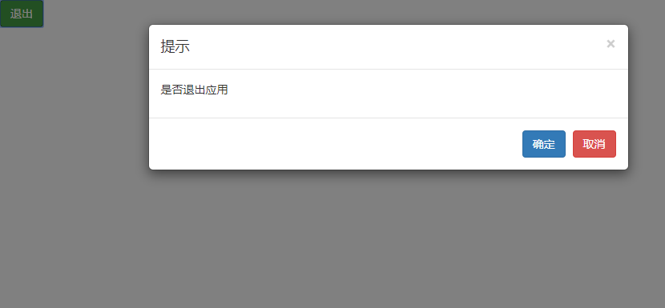

定义：用于快速开发 Web 应用程序和网站的前端框架， 基于 HTML、CSS、JAVASCRIPT 。
优点：框架包含了贯穿于整个库的移动设备优先的样式，所有的主流浏览器都支持 Bootstrap：
引入：需要下载用于生产环境的Bootstrap(内部包含压缩后的CSS、JavaScript和字体文件)和Bootstrap源码(内部包含Less、JavaScript和字体文件的源码，并带有文档)，引用时，要引用css文件和js文件，有的代码还需要引入Jquery文件。
例：
<link rel="stylesheet" href="../bootstrap-3.3.7-dist/css/bootstrap.css"><script src="../jQuery.js"></script>
<script src="../bootstrap-3.3.7-dist/js/bootstrap.js"></script>bootstrap把网页等分为了12分，根据屏幕大小把屏幕分为了4个等级，小于768像素的为超小屏幕，在栅格系统中用xs控制(或者说设置)；大于等于768像素的为小屏幕，在栅格系统中用sm控制；大于等于992像素的为中等屏幕，在栅格系统中用md控制(也是默认值)；大于等于1200像素的则为大屏幕，在栅格系统中用lg控制。
栅格系统中，可以多次嵌套。
例：
1 <div class="container">
2 <div class="row">
3 <div class="col-xs-6">
4 <div class="row">
5 <div class="col-xs-4">
6 <div class="box">1</div>
7 </div>
8 <div class="col-xs-4">
9 <div class="box">2</div>
10 </div>
11 <div class="col-xs-4">
12 <div class="box">3</div>
13 </div>
14 </div>
15 </div>
16 </div>
17 </div>
超小屏幕 (<768px) . col-xs-
小屏幕 (≥768px) . col-sm-
中等屏幕 (≥992px) . col-md-
大屏幕 (≥1200px) col-lg-
添加.col-✳-offset-✳类名实现列的偏移(或者说横向向后移动)，第一个✳代表在多大尺寸范围的屏幕内，第二个✳代表偏移多少列，注意，使用这个方法会将该元素后的元素也推走，后方的元素如果使用该类名，会在被推走的基础上再进行偏移。
例：在超小屏幕占据3列，向右偏移3列
1 <div class="row">
2 <div class="col-xs-3 col-xs-offset-3"><div class="box">1</div></div>
3 <div class="col-xs-3 col-xs-offset-3"><div class="box">2</div></div>
4 </div>添加.col-✳-push-✳类名(向后偏移)和.col-✳-pull-✳类名(向前偏移)实现对该元素的偏移，第一个✳表示在多大屏幕范围内，第二个✳表示偏移多少列。注意，这两种方法不会影响其他元素，如果一个元素设置了该类名，偏移后的位置也有元素存在，则会重叠(或者说覆盖到上面，类似于浮动)，如果两个元素分别设置了这两个类名，且偏移的列数相同，两个元素会互换位置。
例：
1 <!-- 使用push和pull将页面内元素调换位置，调换过程不影响其他元素 -->
2 <div class="container">
3 <div class="row">
4 <!-- push:向后推N列，在这里向后推动6列，不影响其他元素 -->
5 <div class="col-xs-3 col-xs-push-6"><div class="box">box1</div></div>
6 <div class="col-xs-3"><div class="box">box2</div></div>
7 <!-- pull:向前推N列，在这里向前推动6列，不影响其他元素 -->
8 <div class="col-xs-3 col-xs-pull-6"><div class="box">box3</div></div>
9 <div class="col-xs-3"><div class="box">box4</div></div>
10 </div>
1 </div>
HTML中的所有标题标签h1~h6都可以使用，用法一致
例：
1 <h1>我是h1</h1>
2 <h2>我是h2</h2>
3 <h3>我是h3</h3>
4 <h4>我是h4</h4>
5 <h5>我是h5</h5>
6 <h6>我是h6</h6>效果：

1.给表格添加.table table-striped类名，可以给表格添加条纹样式(隔行变色，不影响表头)
2.给表格添加.table table-bordered类名，可以给表格和内部的每个单元格添加边框
3.给表格添加.table table-hover类名，可以让表格内每一行对鼠标移入做出响应
4.给表格添加.table table-condensed类名，可以让表格更加紧凑
5.给表格添加.table-responsive类名，可以在设备非常小的情况下，给表格添加滚动条
按钮可以有几种种常用的方式，a标签设置，button按钮设置，效果相同，可以添加.btn btn-✳来给按钮添加背景色，✳有5种：primary、success、danger、warning、info物种颜色。
例子：
a标签：
1 <a href="" class="btn btn-default">Link</a>button按钮：
<button class="btn btn-primary">Button</button>
设置文本颜色只需要添加.text-✳类名，设置背景颜色只需要添加.bg-✳，✳代表不同的颜色
文本颜色有：muted、primary、success、info、warning、danger六种
例：
1 <p class="text-muted">122345dsadcxczcs</p>
2 <p class="text-primary">122345dsadcxczcs</p>
3 <p class="text-success">122345dsadcxczcs</p>
4 <p class="text-info">122345dsadcxczcs</p>
5 <p class="text-warning">122345dsadcxczcs</p>
6 <p class="text-danger">122345dsadcxczcs</p>效果：

背景颜色有：primary、success、info、warning、danger五种
例：
1 <p class="bg-primary">122345dsadcxczcs</p>
2 <p class="bg-success">122345dsadcxczcs</p>
3 <p class="bg-info">122345dsadcxczcs</p>
4 <p class="bg-warning">122345dsadcxczcs</p>
5 <p class="bg-danger">122345dsadcxczcs</p>效果：

使用pull-✳可以实现浮动，✳代表left左浮动和right右浮动，
为浮动元素添加.clearfix类名可以实现清除浮动
为元素添加.center-block让元素在其父元素中居中
默认左对齐(.dropdown-left，未定义时默认使用)，通过添加.dropdown-right可以实现右对齐
展开方式：.dropdown向下展开；.dropup:向上展开
通过添加.divider类名可以给下拉菜单添加分割线
通过添加.dropdown-header类名，实现对下拉框内容的分组说明(不可点击)
通过添加.disabled类名，实现对下拉菜单子元素的禁用(添加到下拉菜单子元素上)
例：
1 <div class="dropdown">
2 <button class="btn btn-success dropdown-toggle" data-toggle="dropdown">
3 一级菜单
4 <span class="caret"></span></button>
8 <ul class="dropdown-menu">
9 <li><a href="">菜单项</a></li>
10 <li class="divider" role="separator"></li>
11 <li class="dropdown-header">网络</li>
12 <li class="disabled"><a href="">移动</a></li>
13 <li><a href="">联通</a></li>
14 </ul>
15 </div>
效果：

1 <button class="btn btn-success" type="button" data-toggle="modal" data-target="#mymodal">退出</button>
2
3 <div class="modal fade" id="mymodal">
4 <div class="modal-dialog modal-lg">
5 <div class="modal-content">
6 <div class="modal-header">
7 <button type="button" class="close" data-dismiss="modal">
8 <span>×</span>
9 </button>
10 <h4 class="modal-title">提示</h4>
11 </div>
12 <div class="modal-body">
13 <p>是否退出应用</p>
14 </div>
15 <div class="modal-footer">
16 <button class="btn btn-primary"data-dismiss="modal">确定</button>
18 <button class="btn btn-danger" data-dismiss="modal">取消</button>
19 </div>
20 </div>
21 </div>
22 </div>效果：

任俊玖